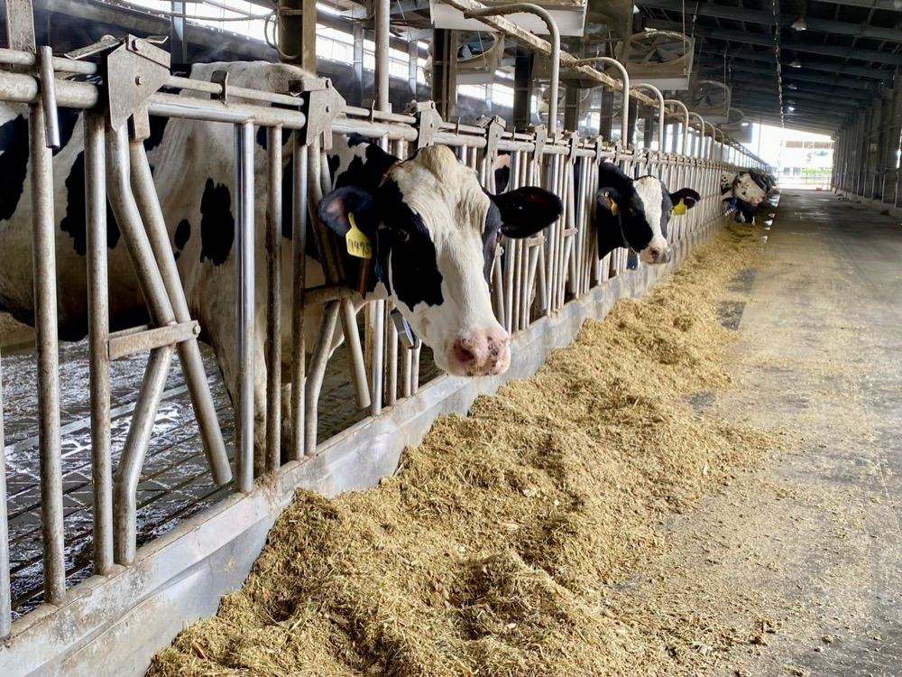
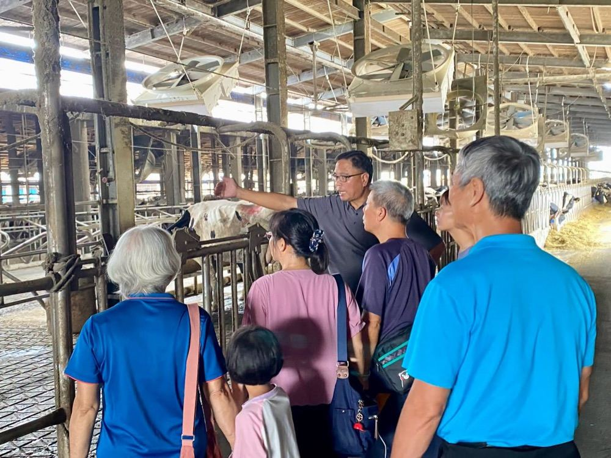
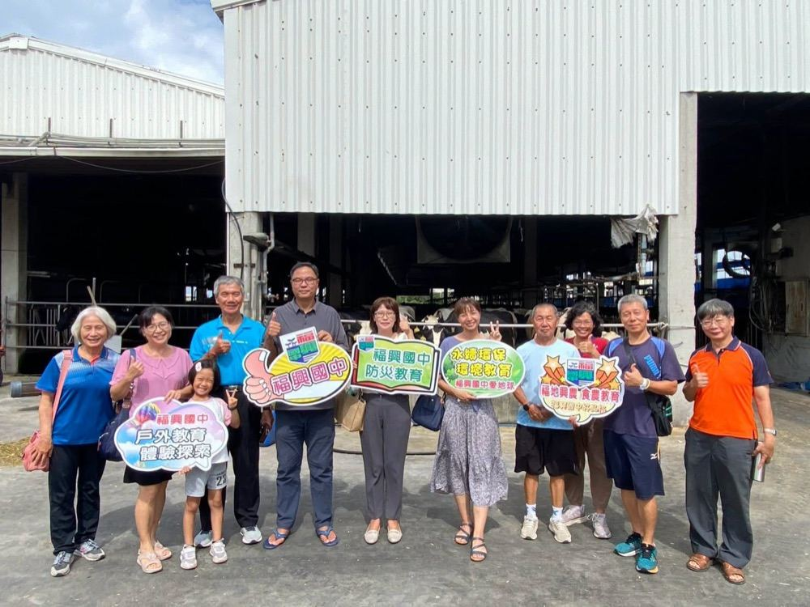
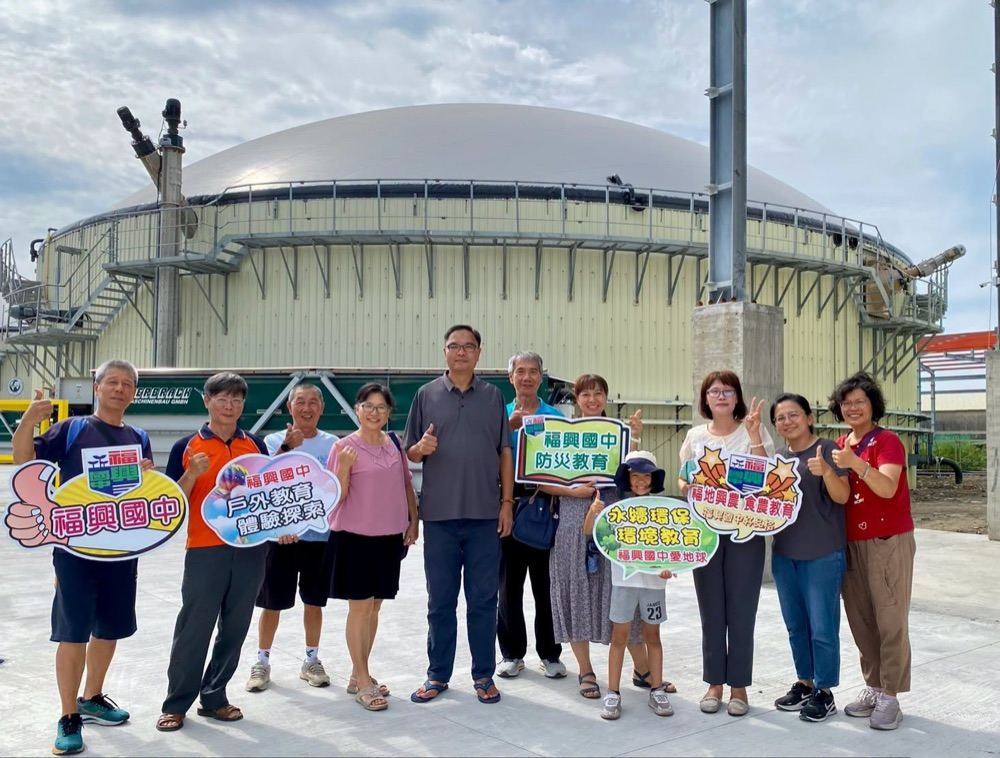
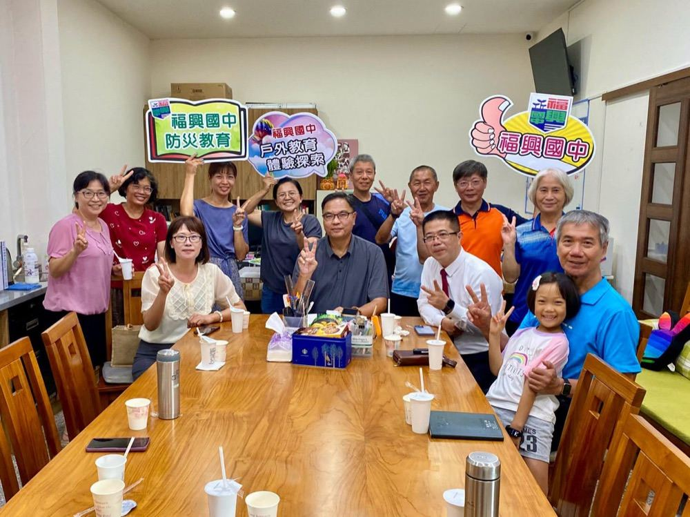

Fusing alumnus Huang Chang-jhen has built Fongle Ranch into a thriving business — and he's doing it the green way. Alongside animal-welfare-focused dairy farming, Huang has embraced ESG principles and a net-zero roadmap, expanding into renewable energy to diversify the ranch's power sources.

Fusing teachers visited the ranch to see its humane dairy cattle facilities up close, walking through the barn where the cows are cared for in a spacious, well-ventilated space.


The highlight of the tour was a striking new addition: a biogas power plant that turns livestock waste into clean, renewable energy — a real-world example of the future of waste-to-energy technology.

Everyone came away impressed by how Huang's business philosophy puts environmental protection first, closing the loop on agricultural waste instead of treating it as a problem. School, community, and local industry aren't separate stories — they're one shared journey, and Fusing is proud to walk it alongside alumni like Huang.

本校傑出校友黃常禎學長經營豐樂牧場事業有成，更結合環保理念推動符合 ESG 環境正義精神的淨零碳排計畫，跨足再生能源領域，朝綠色能源多元化邁進。
福興國中師長們專程前往豐樂牧場，了解先進人道的乳牛飼養環境，走訪牧場寬敞、通風良好的牛舍。
這趟參訪的亮點，是參觀未來能源新趨勢——將廢棄物循環再利用的沼氣發電場，親眼見證「廢棄循環再利用」的技術如何實際運作。
大家對常禎學長在經營理念與環境保護上推動畜牧廢棄物循環再利用的用心深表讚賞。學校教育、社區發展、地方產業三者環環相扣、互為共同體，讓我們攜手向前邁進！